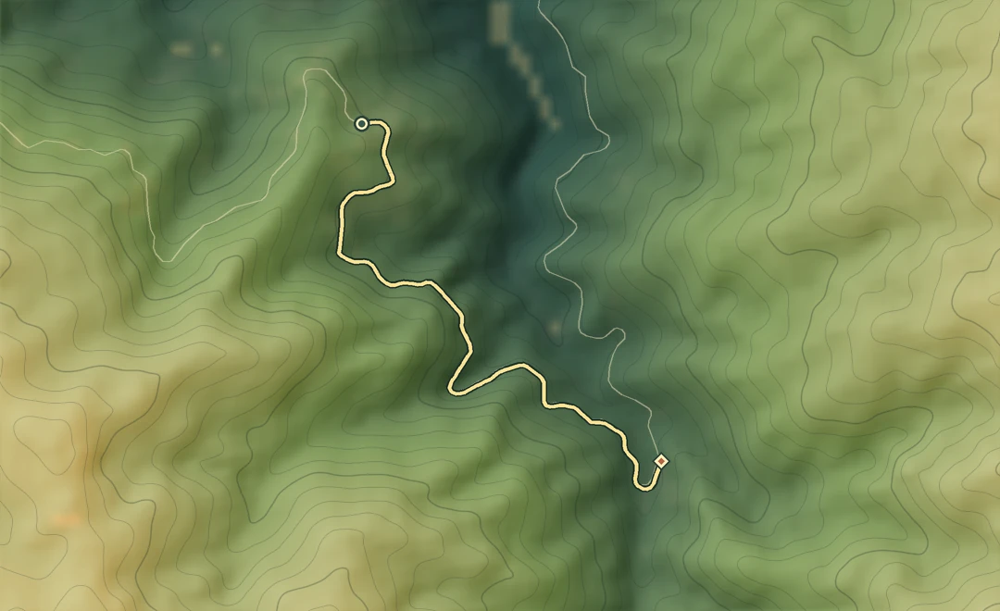

Tú Lệ · Mù Cang Chải
Đèo Khau Phạ
Đường đèo men theo những sườn rừng trên thung lũng. Các thửa ruộng bậc thang xếp lớp dọc theo đường đồng mức.

Chặng lái mô phỏng
- Cảnh quan
- Ruộng bậc thang
- Chiều dài chặng
- 3,2 km
- Tổng leo dốc theo mặt đường trong game
- 73 m
- Tọa độ xuất phát
- 21,75272° B, 104,26714° Đ
- Tọa độ về đích
- 21,73972° B, 104,27954° Đ